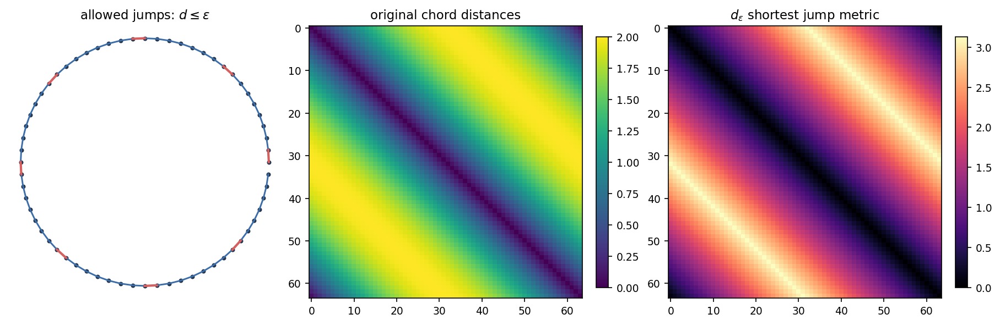
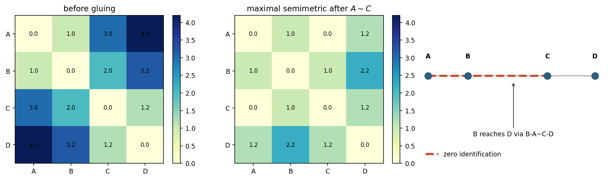
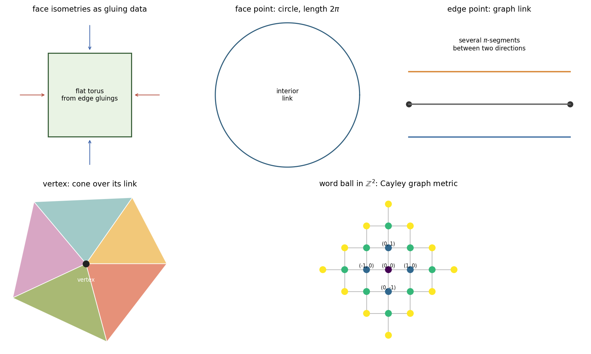
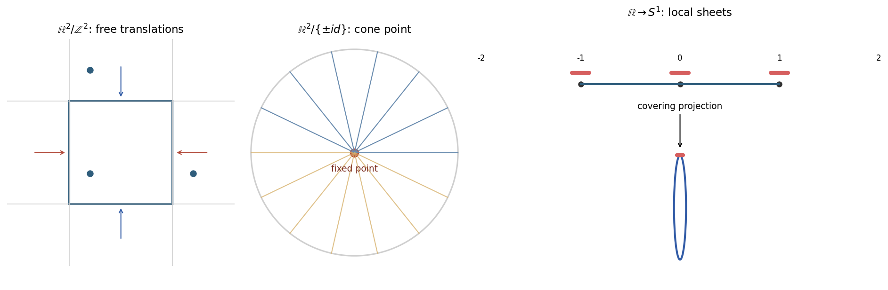
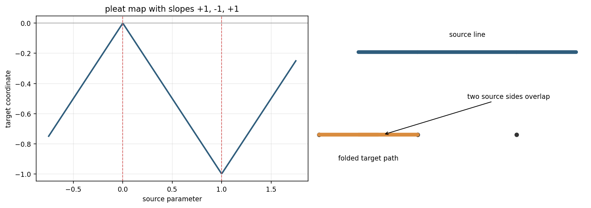
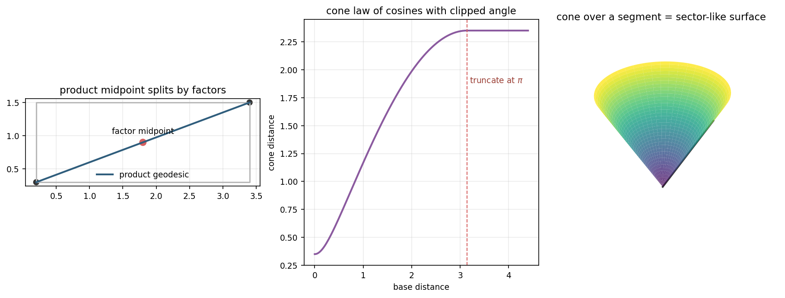

A Course in Metric Geometry, Chapter 3
Canonical notebook: chapter-03-constructions/03-constructions.ipynb
Source span: printed pages 59-100; PDF pages 74-115.
How can new length spaces be built from old ones while the metric remains controlled by local rules, identifications, symmetries, and formulas?
Track how the construction changes shortest routes, local neighborhoods, and the numerical distance function.
These recipes create the model spaces used later for curvature bounds, tangent cones, limits, and comparison geometry.

Allow chains whose original jumps satisfy \(d(x_i,x_{i+1})\le \varepsilon\), then minimize the sum of the jump lengths.
A complete non-intrinsic metric can imitate the local distances yet produce a different global travel metric.

Declare upper bounds and zero identifications; then take the largest semimetric below all polygonal-route bounds.
The notebook models this as all-pairs shortest-path closure over the declared bounds.
Recorded triangle violations after closure: 0.
Identifying \(A\) with \(C\) changes the best route from \(B\) to \(D\), even though \(B\) and \(D\) were never declared equal.
The quotient distance is controlled by every route allowed after the identification.

Euclidean faces supply local metrics; face isometries say which boundary points are the same.
A link records the local cone of directions: flat inside a face, graph-like along edges, and richer at vertices.
Edges are length pieces. Vertices are gluing sites. The metric is shortest path length through the graph.
The notebook records radius 3, 25 vertices, and 36 edges for a sample \(\mathbb{Z}^2\) word ball.

Translations have no fixed point, so small neighborhoods project regularly.
A stabilizer can collapse directions and produce singular quotient behavior.
For small enough base neighborhoods, each component upstairs maps isometrically onto the same neighborhood.
Deck transformations move sheets to sheets and preserve the lifted length metric.

Every curve has the same length after mapping, so the length structure is preserved.
The pleat folds source intervals onto overlapping target intervals.
The notebook records left and right distances agreeing up to \(2.3\cdot10^{-16}\).

Large base separations no longer make wider angles; after \(\pi\), the radial route through the apex can dominate.
The lab turns formulas into observable behavior: a product geodesic decomposes, while a cone geodesic may change route when the base angle is clipped.
Local artifact: product-cone-inspection-lab.html
Small-jump distance agrees locally but may change global travel.
Triangle inequality holds after maximal semimetric closure.
Links record the local cone model at faces, edges, and vertices.
Orbit distance minimizes over representatives and exposes stabilizers.
Small neighborhoods lift to isometric sheets.
Midpoints split in products; cone angles truncate at \(\pi\).
Triangle inequality can force additional shrinkage after gluing.
Non-intrinsic metrics can pass local tests and fail over long routes.
Fixed points can create singular behavior even when the action is by isometries.
Arcwise isometries may fold while preserving path length.
Use local data, gluing, quotients, coverings, products, and cones to make new spaces.
Compute the induced distance through routes, representatives, sheets, or formulas.
Check the invariant that says the construction still behaves metrically.
Next lecture. Spaces of bounded curvature ask how these constructions behave under comparison geometry.